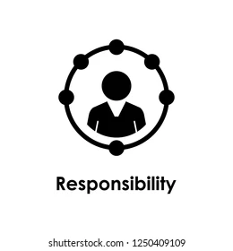

INFINEON TECHNOLOGIES
INTERN
AUG 2017- May 2018
|

TATA CONSULTANCY SERVICE
SYSTEM ENGINEER
OCT 2018- JAN 2022
|
INDIUM SOFTWARE
SENIOR TEST ENGINEER
JAN 2022 - Present
|

Methodolgy Development Activity List based on Trace in Automative Microcontroller
|
FLEXCUBE AUTOMATION IN CITI BANK
|
FINACLE AUTOMATION IN BAJAJ FINSERV
|
|

As Intern my responsible is to create the trace in microchip.
|
As Automation Tester my duties is to automate test case for web, mobile and API application.
Performed Functional Testing, Negative testing and bug tracking.
|
Created Automation Script preparation & Execution.
Analyse the Automation feasibility of testcases.
Executed the Automated cases and share the report with the manual team.
|
 HOME
ABOUT
PROFESSIONAL EXPERIENCE
PROFESSIONAL SKILLS
EDUCATION
RESUME
ACHIEVEMENTS
CONTACT
HOME
ABOUT
PROFESSIONAL EXPERIENCE
PROFESSIONAL SKILLS
EDUCATION
RESUME
ACHIEVEMENTS
CONTACT